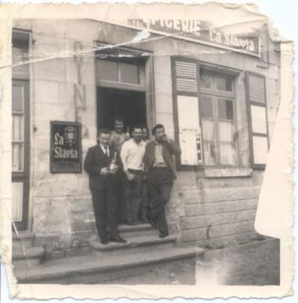

À propos, savez-vous que « bistro » est la déformation d'un mot russe qui signifie « vite » ? En 1814, après la défaite de Napoléon Ier, Paris était occupé par les Russes et les cosaques, qui, pour être rapidement servis dans les cafés, disaient : « bistro ».
Le temps de la reconstruction
C'est tout de suite après la Grande Guerre, entre 1920 et 1939, qu'il y eut le plus grand nombre de cafés à Autrêches. À cette époque, de nombreux manœuvres travaillaient à la reconstruction des bâtiments et au nivellement des terrains qui avaient été bouleversés par les ouvrages militaires (abris ou cagnas, soutes à munitions, tranchées…) ou par les cratères d'obus de tous calibres. C'étaient des gens du pays ou bien amenés par des entreprises.
Le travail de reboucheur d'abris était particulièrement dur : il fallait en faire le plus possible dans la journée. Un jour, à la fin du repas de midi, un chef d'équipe constate l'absence de deux « boucheurs ». On va aussitôt déboucher la dernière cagna, dans laquelle on trouve nos deux gars : les autres, qui travaillaient près de la sortie, avaient tout bouché en oubliant ceux du fond ! Il était temps. Ils n'avaient plus d'acétylène et commençaient à suffoquer après trois heures dans le noir. Ernest était l'un d'eux, et il apprécia beaucoup la chopine prise au bistro.
Un café dans chaque hameau
Il y avait un café-hôtel-restaurant dans chaque village. On voit encore celui d'Autrêches, 2 place de l'Église, celui de Chevillecourt, 26 rue du Point du Jour, et celui d'Hautebraye, au carrefour, 1 rue Saint-Victor.
Mais d'autres étaient installés dans des maisons plus petites ou dans des constructions provisoires, les baraques Adrian. Tout de suite après la guerre, elles permettaient de reloger rapidement la population. On en voit encore quelques-unes dans le village, mais, à cette époque, elles couvraient toutes les régions où l'on s'était battu.
Il y eut donc des débits de boissons aux adresses suivantes :
- 7 rue du Beaumontoir,
- entre les 5 et 7 rue de la Horse,
- 1 rue des Champs,
- 22 rue du Point du Jour,
- 2 rue de Ponfare,
- 6 rue du Point du Jour,
- 32 rue du Point du Jour,
- 7 rue des Marais.
Au fil des ans, ces 11 cafés furent tenus par 37 personnes différentes. Pour certaines, il s'agissait d'un travail à plein temps ; pour les autres, le débit était tenu par la femme, que l'homme aidait le soir après le travail : le ménage avait ainsi un appoint de revenus appréciable, du moins quand les affaires marchaient.
Souvent, on y vendait de la charcuterie, de l'épicerie, des boissons en bouteille, du tabac, même du poisson. Certains exerçaient en même temps une autre activité : charron, maréchal, coiffeur…
Boire, fumer, jouer
Les consommations étaient peu variées : la chopine de rouge, parfois la canette de bière, souvent le café et le pousse-café, rarement l'apéritif. Les trois principaux faisaient restaurant, et dans les autres il arrivait que la patronne prépare un repas simple ou fasse réchauffer les gamelles.
Pour ouvrir un débit de boisson, il faut une licence. Certains ne pouvaient vendre que du vin en bouteille à emporter. Un patron, surnommé « la puce qui r'nifle », servait les assoiffés par un trou fait par un obus dans le mur.
Le tabac se fume, se chique ou se prise. Pendant la guerre, le tabac à priser n'étant pas contingenté, certains s'y sont mis, même des femmes ; aujourd'hui, c'est plutôt rare ! Quand on avait épuisé les ratons, on fumait du tabac de jardin : beaucoup en avaient un petit carré et discutaient des mérites comparés des différentes espèces. La chique avait ses amateurs : c'est plus vite en bouche, c'est économique et ça dure plus longtemps, pas besoin de feu, on ne risque ni incendie ni explosion ! Seul inconvénient : pour la propreté, il faut avoir un crachoir à distance de jet !
Eugène, dit « l'Agache » parce qu'il était très bavard, maître-charretier de son état, avait l'habitude de placer sa chique « en cours de consommation » dans le revers de sa casquette. On dit qu'un jour où il était en manque, il a chiqué sa coiffure !
Les divertissements étaient rares. Le soir ou le dimanche, on jouait à la manille, coinchée ou non. La T.S.F. n'arriva dans les campagnes que vers 1934 ; on eut alors de la musique, des pièces de théâtre, des variétés, des chansonniers. Dans le café de la place de l'Église, il y avait un billard. Le dimanche, on « guinchait » au son d'un piano mécanique. Pendant la période de reconstruction, il y eut même un groupe musical formé par les ouvriers.
Un lieu d'amitié
Évidemment, certains abusaient de la boisson et sombraient dans l'alcoolisme (et dans le fossé, où on les retrouvait couverts de rosée le lendemain matin) ; mais les lois contre l'ivresse étaient affichées et les patrons sérieux veillaient à ce qu'il n'y ait ni abus ni scandale.
Pour la plupart, au contraire, le café était un lieu de détente et d'amitié, et les isolés appréciaient son ambiance chaude et familiale. Il est dommage que, dans nos campagnes, les cafés disparaissent les uns après les autres. Dans certains villages, les municipalités essaient de les maintenir en leur donnant quelques avantages.
Pour faire un village, il faut bien sûr des habitants et des enfants, une mairie, une église, une boulangerie, une épicerie, une charcuterie, une poste et au moins un bistrot accueillant. Chacun pourra donner la priorité qu'il veut à ces différents éléments.
Ernest Lefèvre, propos recueillis par L. Primaux